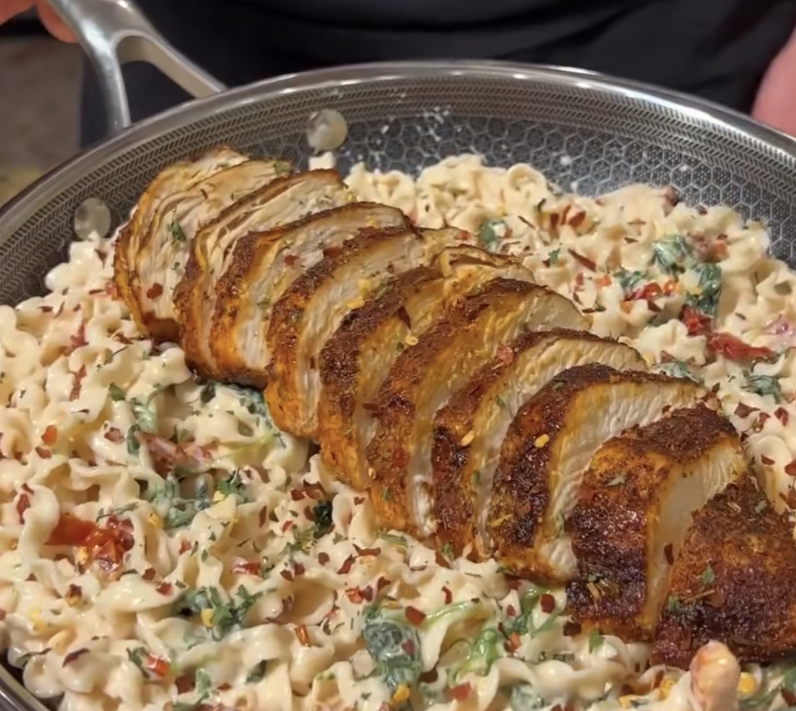

Tuscan Chicken Pasta

Description
At 64 grams of protein and only 560 calories per serving, this creamy Tuscan chicken pasta is a delicious and easy meal prep idea you can make to have healthy meals for the whole week while feeling more cheatsy than if you'd ordered a Domino's pasta bread bowl. Let's get started!
Ingredients
- 1.5 cups cottage cheese
- 1/2 cup grated parmesan (reduced fat)
- 1/2 cup skim milk
- 1 tbsp tomato paste
- 1 tsp minced garlic
- Garlic salt to taste
- 24oz of chicken breast
- Italian seasoning/herbs to taste
- Garlic powder to taste
- Onion powder to taste
- Lemon pepper to taste
- 1 box protein pasta of choice (I prefer Banza)
- 1 cup sundried tomatoes
- 1/2 cup cooked spinach
Steps
- Combine cottage cheese, parmesan, milk, tomato paste, minced garlic, and garlic salt into a blender, and blend until smooth.
- Cut chicken breasts into strips.
- Take chicken and season to taste (use suggestions in ingredients list above).
- Spray a pan with cooking spray, and pan grill chicken until fully cooked.
- Combine cooked pasta, tomatoes, and spinach into a bowl and fold in sauce.
- Top pasta with chicken.